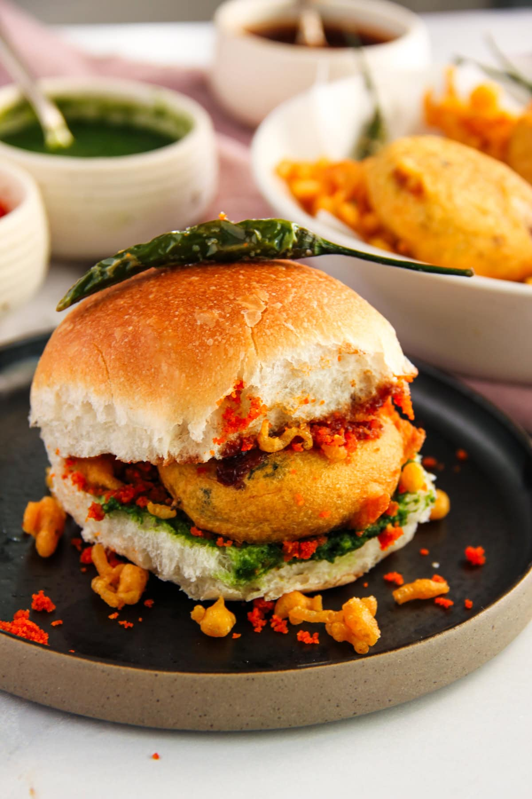

Vadapao Recipe

Description
Vada Pav is a popular Maharashtrian street food made with a crispy and spicy potato fritter served inside a soft
pav (bread roll). It is usually served with green chutney, dry garlic chutney, and fried green chilli.
Ingredients
- 4 pav
- 3 medium potatoes
- 2 green chillies,finely chopped
- 3–4 garlic cloves, crushed
- 1 teaspoon mustard seeds
- ½ teaspoon cumin seeds
- ½ teaspoon turmeric powder
- 1 tablespoon coriander leaves, chopped
- Salt to taste
- Oil for frying
For the batter
- 1 cup gram flour (besan)
- ¼ teaspoon turmeric powder
- ½ teaspoon red chilli powder
- A pinch of baking soda
- Salt to taste
- Water as needed
Steps
- Boil the potatoes, peel them, and mash them.
- Heat a little oil in a pan. Add mustard seeds and cumin seeds.
- Add garlic and green chillies and sauté for a few seconds.
- Add turmeric powder and mashed potatoes. Mix well and add salt and coriander leaves.
- Let the potato mixture cool and shape it into small round balls.
- In a bowl, mix gram flour, turmeric, red chilli powder, baking soda, and salt. Add water gradually to make a thick batter.
- Heat oil for deep frying.
- Dip each potato ball in the batter and carefully place it in the hot oil.
- Fry until the vadas become golden and crispy.
- Slice the pav and spread green chutney and dry garlic chutney inside.
- Place the hot vada inside the pav and serve immediately with chutney and fried green chilli.
Home